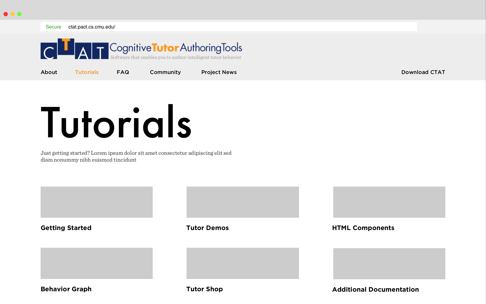
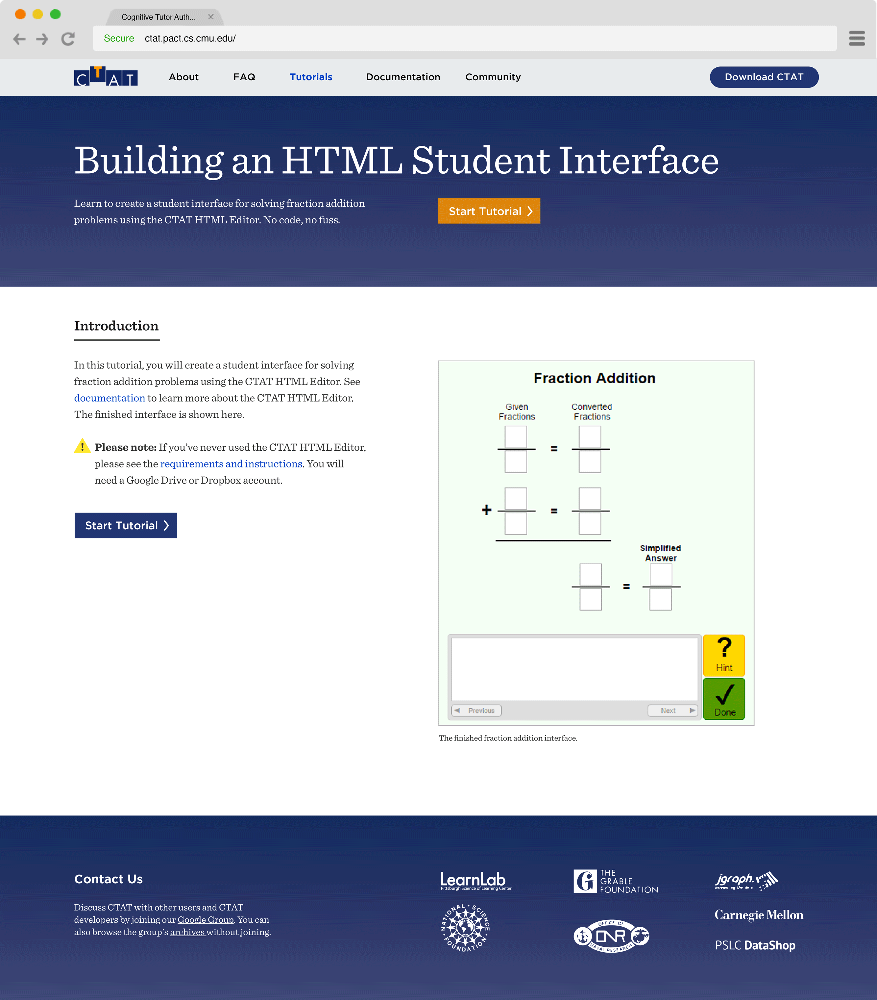
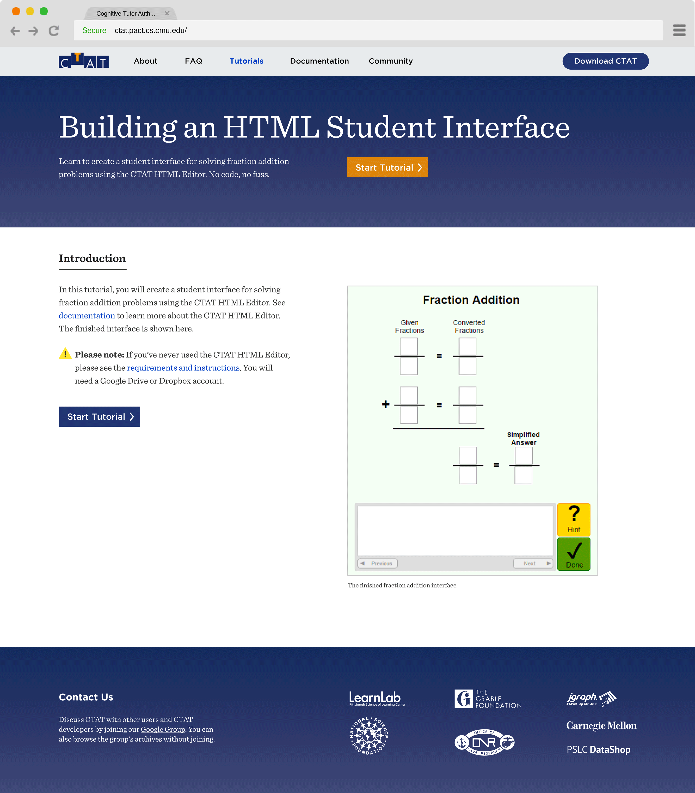

Increasing adoption of a tutor-authoring software
Challenge
To identify barriers to adoption for CTAT, a tutor-writing software, and explore ways to increase its usage in higher education settings.
Outcome
The design and demo build of new web pages and tutorials for CTAT.
Role UX designer
Team Grace Guo (researcher), Chris Feng (project manager), Siting Jin (developer)
Overview
Background on CTAT
The Cognitive Tutor Authoring Tools (CTAT) allow instructors to create intelligent tutors, which can provide contextual feedback to students as they work through problem. This function makes CTAT a powerful tool, but our research showed that potential users have found it too complicated to understand, much less use.
Our Redesign
We focused on helping users learn about tutors and discover their ease of use. We designed web components that work together to teach users how CTAT enhances the processes of delivering problem sets and feedback.
Target Users
Profile
- Age: 30-50
- Profession: Professor or instructional designer
- Works in higher education & STEM domain
User Needs
- To create challenging problem sets
- To provide students with guidance and feedback
Our users are instructors in university-level settings. Challenging course material and feedback are both crucial to students' learning, yet providing both is immensely time consuming. For educators in STEM subjects, CTAT could alleviate many of these issues, but they haven't adopted it for one reason or another.
[F]aculty are busy...If they are going to put upfront time investment, it better be worth it.
Research
Key Findings
Through competitive analysis and interviews with professors, we learned about the problem-writing process and some useful features of other educational technologies. By comparison, CTAT is an extremely powerful tool, but we identified 3 major problems preventing its adoption:
- UI/UX: CTAT's interface is developer- (not user-) centered, resulting in an often frustrating and unintuitive user experience.
- Troubleshooting: There is a lack of comprehensive documentation or help forums, preventing troubleshooting.
- Onboarding: New users find CTAT overly complicated, rather than appreciating its advanced capabilities.
Design Goals
Of the 3 areas, we determined that only #2 and #3 were in scope for our time frame, as #1 would involve becoming familiar with CTAT’s code base. We derived a primary goal to help people better learn and understand the value of CTAT.

Prototypes
We identified tutorials as a touchpoint that could help users learn, hypothesizing that more effective tutorials increase user interest and engagement with CTAT. We focused on improving the text-heaviness and navigation of the current tutorials.
During this process, I created interactive prototypes for testing and also iterated on interface and visual design for the tutorials.
Low-Fidelity Prototypes
In testing, we asked users to build a problem interface following our tutorials, and afterwards what they retained. Initially we compared two formats (and the current tutorial as a control variable): screenshots with light text instructions, and a video tutorial with voiceover instructions. We found that text provided clearer explanations, which helped users retain specific parts better, but following a video made the task easier to complete.
Mid-Fidelity Prototypes
In the next rounds we worked to find a good balance between the two formats for better learning and retention. We also worked out details like animation speed and navigation controls to improve usability.
The [tutorial] made me want to know more. If it only uses a few things to make something decent, I want to know what else it can do.
Other Process
Website
We decided to rework CTAT’s website as a whole, because we realized the tutorials by themselves were not providing enough context about CTAT’s use cases, background, and miscellaneous features. I prototyped the web pages though they were not tested as extensively as our tutorials. Below are wireframes and older iterations.
 

Visual Components
As the team's designer, I also spent some time developing a new visual system for the site and tutorials, exploring component styles and layouts.
Typography & Icons
Callouts
Layout
Final Deliverables
Website
Our new website hosts a tutor gallery and a series of tutorials to teach new users about CTAT. I crafted the style and language of the site to be approachable and soothing. Below is a site map of the new website.
Tutor Gallery
The gallery allows users to explore real, deployed tutors made with CTAT, demonstrating what they can do and serving as inspiration for novices.

Tutorials
The bulk of our work was focused here. The tutorials are designed as step-by-step guides to teach users about CTAT and the power of its features.

Learning Outcomes
- Deriving design goals from open-ended user research
- Balancing user needs with the client's ask to make design decisions
- Usability testing and iterative design
Reflection
Though users showed better learning and understanding of CTAT in our testing, we were not able to fully test the effectiveness of our design on CTAT adoption over time. Some possible next steps might include:
- Deploying and evaluating the long-term effect of the new website and its features on CTAT adoption. A good indication of tutorial effectiveness could be a correlated upward trend between views and tutors created.
- Creating tutorials for CTAT's more advanced features. Making complex concepts learnable could encourage the creation of more diverse and powerful tutors, and the tool's overall usefulness.